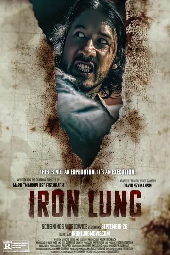

Situado em um futuro pós-apocalíptico em que um evento conhecido como “The Quiet Rapture” fez com que todas as estrelas e planetas habitáveis conhecidos no universo desapareçam, um condenado é enviado para pesquisar um oceano de sangue descoberto em uma lua deserta, usando um pequeno submarino apelidado de “Pulmão de Ferro”.